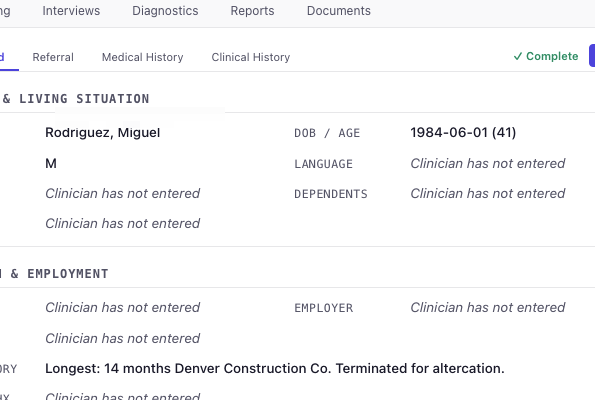
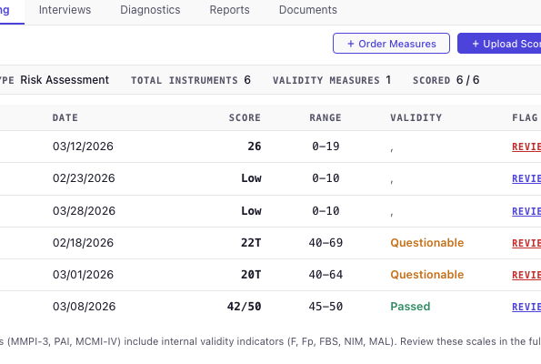
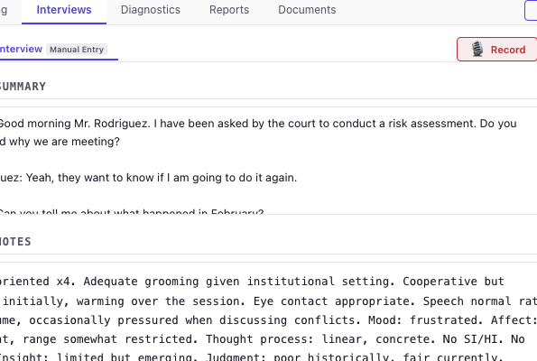
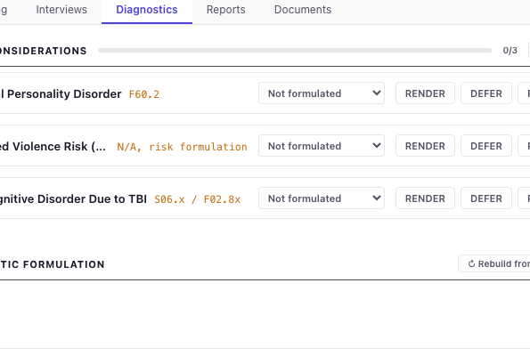
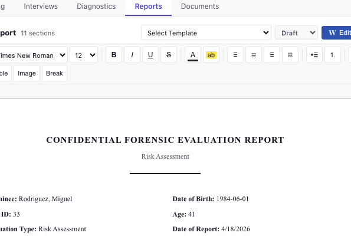

Demo: Intake to reports in 3.5 minutes
01 Intake
Every case begins with the referral. Psygil opens a structured intake the moment a new case is created. Identity. Court information. Charges. Referral question. Legal history. Family history. Medical history. Substance use.
The clinician fills it in, not the AI. Each field is typed, timestamped, and preserved so the downstream agents and the eventual reviewer know exactly what was disclosed and when.

02 Testing
The clinician selects the test battery. For risk, that might be the PCL-R, HCR-20v3, and SARA. Psygil tracks every instrument administered, who scored it, when, and the result. 43 instruments available out of the box.
The AI does not pick the tests. The AI does not score the tests. The clinician does both.

03 Interviews
Record sessions with live transcription running entirely on your machine. Import Zoom or Teams transcripts. Every session tracked with clinical notes, mental status observations, and collateral contacts.
Every observation lives in one place. When opposing counsel issues a discovery request, the clinician can produce the underlying record in minutes, not days.

04 Diagnostics The gate
The Diagnostician agent proposes an evidence map. DSM-5-TR criteria, ICD-10 codes, and supporting or contradicting evidence from the case file.
The clinician decides which diagnoses are rendered, deferred, or rejected. The clinician can add diagnoses the agent missed. Until the clinician makes at least one diagnostic decision, the Writer agent refuses to run.

05 Reports
The Writer agent drafts a multi-section forensic evaluation from your diagnoses, test data, clinical notes, and your writing voice. The Editor agent reviews for consistency, tone, and citation accuracy.
The clinician reviews, edits, and attests. Attestation is cryptographically signed and timestamped. The audit log records every change from intake to signature.

Core message
Psygil is an evidence ledger, not a decision engine. Every diagnostic judgment is made by the licensed clinician. The AI agents read records, organize evidence, and draft language. They never diagnose, and they never sign. The doctor diagnoses. Always.
Ready to run your own?
Pick a license tier. Your key and installers arrive in your email the same business day.